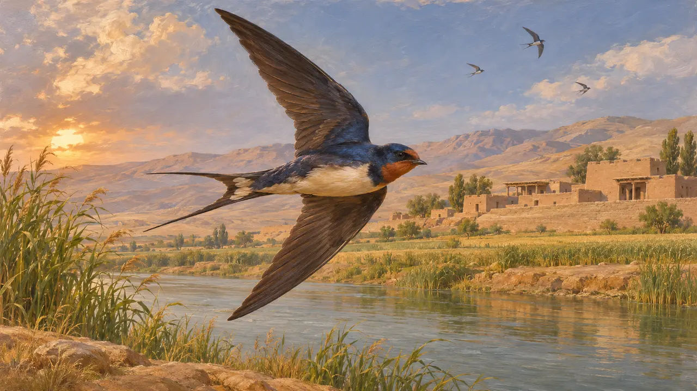
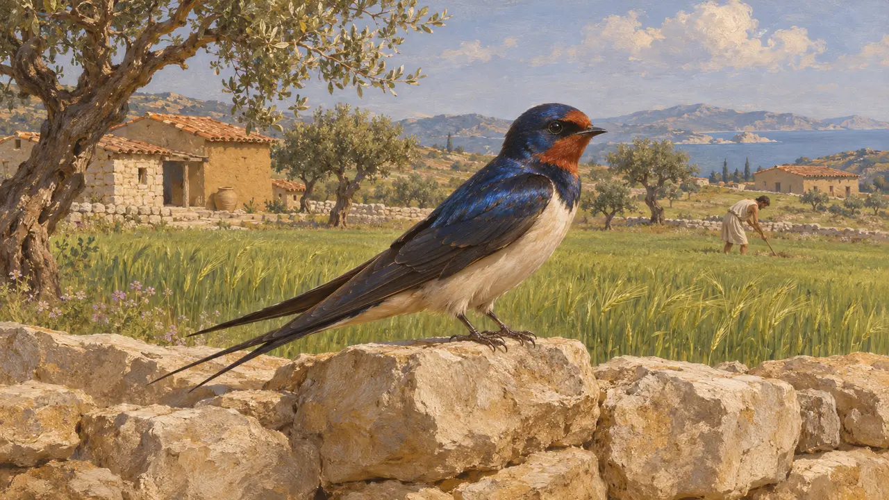
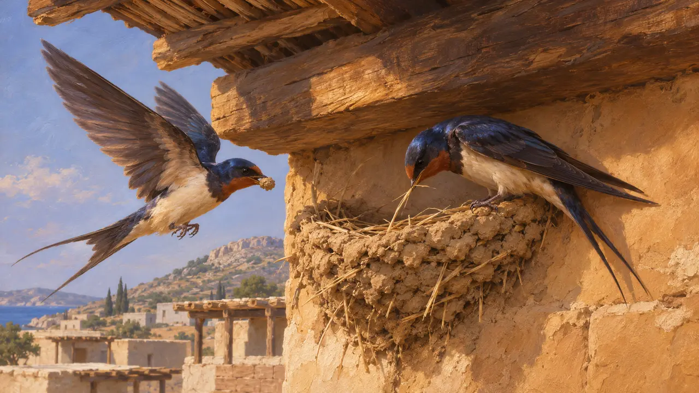
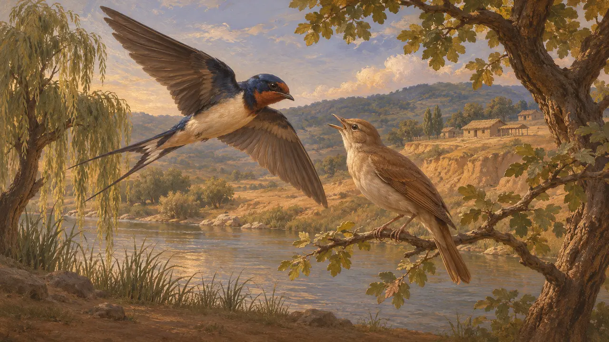

Encyclopédie › Faune et climat

L'hirondelle
Un oiseau migrateur observé à travers l'empire perse, 559-479 av. J.-C.
Dans le jeu : Niveau 1 : Le Tombeau du fondateur, Niveau 2 : Le Porte-lance, Niveau 3 : Le Mensonge, Niveau 4 : La Terrasse, Niveau 5 : La Charte, Niveau 6 : Le Pont de bateaux, Niveau 7 : Sardes brûle, Niveau 8 : La Baie de Marathon, Niveau 9 : Le Canal, Niveau 10 : Les Portes chaudes, Niveau 11 : Le Dénouement
L'hirondelle était un oiseau d'été familier dans les terres gouvernées par les Perses, de la Grèce et de l'Anatolie jusqu'à l'Égypte et la Mésopotamie. Aucune source perse à son sujet n'est connue de l'encyclopédie. Ce que l'on peut en dire repose sur les auteurs grecs, qui voyaient dans son retour un signe du printemps, et sur les habitudes connues de l'oiseau.
Dans le jeu : Le jeu dessine des hirondelles comme des oiseaux qui survolent les niveaux de Pasargades, de Memphis, de Bagastana, de Parsa, de Suse, de l'Istros, de Sardes, de Marathon, d'Athos, des Thermopyles et de Platées. Elles ne sont qu'un décor et aucune règle ne les prend en compte.

Un oiseau de tout l'empire
Récit antiqueLes hirondelles se reproduisent à travers l'Europe, l'Asie occidentale et l'Afrique du Nord et hivernent plus au sud ; elles traversaient donc toutes les régions du jeu. C'est une déduction tirée de l'aire de répartition et des habitudes actuelles de l'oiseau. On ne connaît aucune inscription ni aucune trouvaille de fouille de l'époque qui nomme cet oiseau.
Aristotle, History of Animals

L'hirondelle, signe du printemps
Récit antiqueLes auteurs grecs voyaient dans l'arrivée de l'hirondelle le marqueur d'une saison. Hésiode, dans Les Travaux et les Jours, se sert de son retour comme d'un repère dans l'année agricole, et Aristophane reprend la même idée dans Les Oiseaux. C'est une habitude grecque, qui ne nous apprend rien sur les usages des Perses.
Hesiod, Works and Days; Aristophanes, Birds

Nidification dans les bâtiments
Récit antiqueAristote décrit l'hirondelle qui bâtit son nid de boue et de paille. Ces nids conviennent aux avant-toits et aux poutres des édifices de brique crue et de bois, qui se dressaient aussi bien dans les villes perses que grecques. Aucune source de l'époque ne décrit d'hirondelles nichant dans les salles ou les maisons perses.
Aristotle, History of Animals

Le mythe grec de Procné
Légende tardiveLa tradition grecque tardive racontait l'histoire de Procné et de sa sœur Philomèle, changées en hirondelle et en rossignol après un crime commis au sein d'une famille, et situait le récit en Thrace. Les versions divergent sur la sœur devenue chaque oiseau. Ce récit relève de la narration grecque et n'a aucun rapport avec l'empire perse ni avec les événements de 559-479 av. J.-C.
Apollodorus, Library 3.14.8
Sources
- Aristotle, History of Animals
- Hesiod, Works and Days
- Aristophanes, Birds
- Apollodorus, Library 3.14.8